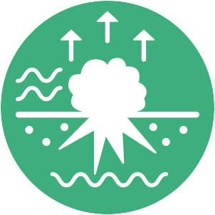
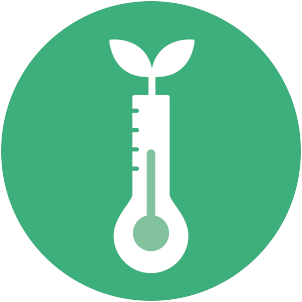
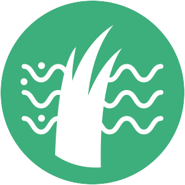
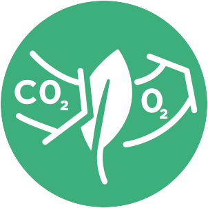
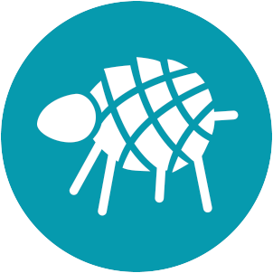
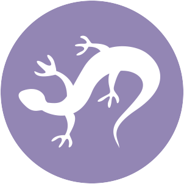

Ikoner for urbane økosystemtjenester¶
Ikoner for urbane økosystemtjenester ble utviklet for Bymiljøetaten i Oslo kommune i prosjektet Fremtidens Byer. Ikonene er utviklet for kommunikasjon om økosystemtjenester med befolkningen og andre sektorer.
Ikonene er tilgjengelige for nedlasting her. De kan brukes av andre kommuner og organisasjoner.
1. Regulerende tjenester¶
Pollinering og frøspredning¶

Vannhåndtering¶

Motvirke erosjon¶

Lokal klimaregulering¶

Rensing av vann¶

Rensing av jord¶

Rensing av luft¶

CO2-opptak og lagring¶

Støyreduksjon¶

2. Forsynende tjenester¶
Matproduksjon¶

Kunst/leketøy¶

Friskt vann¶
3. Kunnskaps- og opplevelsestjenester¶
Rekreasjon, mental og fysisk helse¶

Estetikk¶

Turisme¶
Utdanning og kognitiv utvikling¶

Stedsidentitet og kulturarv¶

4. Støttende tjenester¶
Habitat for truede arter¶

Biologisk mangfold¶